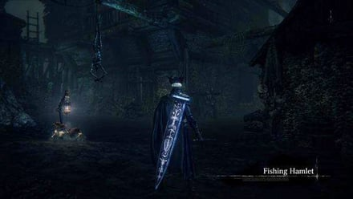

Fishing Hamlet is a location in Bloodborne. It is part of The Old Hunters DLC, and it is its last area.
General Information

- Previous: Astral Clocktower
- Next: Hunter's Dream
- Suggested Level: 80 to 120
- Suggested Upgrade: +8 or +10
- Bosses: 1
- Lamps: 2
- Insight Gained:
- Find Fishing Hamlet (+4)
Fishing Hamlet Map
{kind=link}
NPCs in the area
- Harrowed Hunter, at the Lighthouse Hut lamp
- Church Assassin Brador
- Fishing Hamlet Priest.
Bosses
Items
Weapons & Armor
- Kos Parasite
- Rakuyo
- Simon's Bowblade (via quest completion)
- Beast Hide Garb
- Bloodied Arm Bands
- Bloodied Trousers
- Harrowed Set
Consumables
- Twin Blood Stone Shards x??
- Blood Stone Chunk x??
- Blood Rock x1
- Oil Urn x??
- Lead Elixer x??
- Blood Vial x??
- Madman's Knowledge x??
- Kin Coldblood (11) x??
- Underground Cell Inner Chamber Key (Via the Harrowed Hunter Quest completion or as a drop)
Specials
- -
Enemies
- Winter Lantern
- Hamlet Fishmen
- Fishwitch
- Shark-Giant
- Deep Sea Hound
- Lightning Summoner
- Snail Woman( Shell Maiden)
Notes
-
According to the Priest, the Fishing Hamlet was attacked and its inhabitants abused by, the Byrgenwerth Scholars
-
This area is most likely a homage to the town of Innsmouth, from the works of H.P. Lovecraft
Fishing Hamlet Walkthrough
Through the Clock
After defeating Lady Maria, you'll get a prompt to 'Hold up Celestial Dial'. After you do so, an animation will begin which causes the the entrance to the fishing hamlet to open. Walk forwards through the central hole, drop down from the clocktower and go down the path. To the right, you’ll find a corpse with a Lead Elixir on it, and just ahead you’ll find one with a Madman’s Knowledge. Also on the path will be an NPC that doesn’t really have any name, however talks about Byrgenwerth among other things. Continue past him and light the first lamp of the Fishing Hamlet.
[pic of first lantern]
Head down the right path and once you reach that small open area, near the corpse with 3x Blood Vials, a new enemy will emerge from under the wall: The Hamlet Fishmen.
- This one wields a spear, although there are other variants.
- They are actually easy to defeat, as their attacks are easy to dodge and they are slow to attack afterwards.
- The only problem is if you are at a distance, they will run at you and it is difficult to tell when exactly they will attack, but alone they are easy enough to kill.
Once he is dead, continue down the path. If you were fast enough, another Fishman will be walking down the path in front of you, so go ahead and take care of him. If you didn’t, he’ll just be at the end of the path along with some other Fishmen. Once you start walking further down the path, one of them will come out from the right side between some buildings, and the rest in the area will aggro onto you, which are 2 more if you killed the enemy when he walked across the path in front of you.
Continue down the path, and head up the steps on the left side into the house (the house with the hanging green lamp). In front of you is a Fishmen enemy wielding two pitchforks, which is much better at close-ranged fighting than their spearmen counterparts. Other than that, it's still simple enough to overcome, especially with their susceptibility to backstabs. Go into the room to the left and pick up the Tempering Damp Blood Gem(6), then head back out, and continue down the long path. A word of warning: up ahead, you'll find a well with two Fishmen (spears) along with a Fishwitch.
- This shrouded enemy that will send out multiple arcane skulls.
- The skulls are slow but are homing. So avoid them by running away from them until they blow up, don't try to dodge them as they will follow.
- The best way to deal with this situation is to run up to the Fishmen to aggro them, and then run back up into the house area, as the skulls will not be able to hit you from there most of the time.Once they’re dealt with, sprint up to the shrouded enemy and just hit them once, and you shouldn’t be hit by any of the skulls.
Once you’ve dealt with that, pick up the 2x Lead Elixirs on the corpse. At this point you can head into the well, though be warned it isn't an easy fight waiting for you. Take out your firearm, and look to the left. You’ll see a Fishman who won’t aggro onto you even though you are within its line of sight, as well as some pots to the left of him that look like they can be interacted with; anyone who has ever played a souls game can tell that this Fishman, is no more than bait for a bigger surprise. As soon as you get close, a Shark-Giant will come out from behind the building next to the pots. Dealing with these can be tricky, but we've got you covered:
- A second or two after the Shark-Giant emerges, shoot the pots and they will explode and burst into flame, dealing a lot of damage to it, and most likely killing it.
- In the event that it doesn’t, just watch out for his attacks.
- They’re generally very telegraphed, and consist of slow slams and diagonal slashes.
- He also has a grab attack.
[pic of shark bait]
Once the big boy is dead, deal with the bait. Head left, into the area the Shark-Giant emerged from, to find two more Fishmen, and a Kin Coldblood(10) at the end. Turn around and head forward until you come across a fishing boat surrounded by lanterns -DON'T PICK THE ITEM UP YET as the enemies across the water will chuck Molotovs at it and blow it up-, take a U-turn up the hill on the left. At the top, you'll find a Great One's Wisdom, and will end up on a roof. Around the right corner, you'll find a ladder you can drop to open up a short cut. Once you've done that, proceed through the hole in the wall next to the ladder you've just made accessible (still on the roof). Continue through until you find a seemingly lone Fishman roaming over an item. Spoiler alert: he's not alone, another Fishmen will emerge from the left. Finish these two off to acquire the Harrowed Set. On the stairs next to the loot you just picked up, you can also find a Blood Stone Chunk. Head back out to the roof and drop down how you came up initially. The boat should be blown up by now, which means you can advance and pick up the 4x Oil Urns.
As soon as you do this, back off. This will draw the fire of the same Molotov-flinging enemy, as well another three Fishmen. Take care of them and this time, you’ll want to head into the house on the far right end of the lake. In front of the house are 3 Fishmen, which may have already been aggro'd. Take the side entrance and you should find one of the Molotov-flinging Fishmen, and another regular one. You can safely backstab this one, however, without alerting any of the other enemies. Once it is dead, head up the stairs and you’ll find another four more Fishmen, one of which tosses Molotovs . Kill them, and then pick up the Odd Fire Damp Blood Gem(5) off of the corpse on the second floor. Head back down to the first floor, and deal with the other two Fishmen underneath the stairs. Then, deal with the other one running at you from the other side, and head over to where that one was originally. Near the doorway you’ll find another one of these spear-variety Fishmen, aggro him and deal with him alone. Come back down and out the house.
Well of a Detour
If you do choose to head into the well in the middle of the open space, you'll find an anchor-wielding version of the Shark-Giant from above with a lot more health and nasty reach. On top of that, one you get it down to half health, it will sprint back to the ladder you entered from to gang up on you with another lesser giant that drops in from the opening in the upper wall. The trick to this fight is to stay as close to theShark-Giant with the anchor as possible while he swings, dodging around behind to get a few free whacks in. It is possible to stunlock it as it tries to run for the ladder if you have a heavy weapon like Ludwig's Holy Blade, but not easy. If you can do that, you don't have to fight both at once. Both are susceptible to parrying, but watch out for the second giant once you've parried the first. The lesser giant drops the Rakuyo. Return to the surface.
[pic of giants]
Route to the Second Lantern
Once all the Fishmen in the lake are defeated, continue on through the path located on the other side of the river. Up at the top will be another variation on the spear wielding Fishmen, as these actually throw their spears at range, but otherwise act like regular spearmen; for the sake of convenience, let's call them javelin Fishmen. Once this one is dead, another new enemy will come down from the area to the left, which is basically a Deep Sea Hound; pretty much a regular dog with an aquatic theme and a roar which doesn’t do very much. Proceed cautiously, hugging the right side. You’ll find another Fishman with aFishmen, and another Hound. The latter two enemies will aggro onto you before the others, so take care of them, and then proceed with the other two. Once they are dealt with, there is another javelin Fishman up at the top of the same path. However, on the ledge above him, another Fishwitch will shoot out dark skulls at you. This area comes with a wealth of problems as there is another anchor Shark-Giant on the far right side of the area, which will aggro once you're too close to the Fishwitch's ledge. The best way to handle this situation is the following:
- Target the javelins.
- Back off so the witch can't shoot at you anymore. Wait till the attack ends.
- Rush the witch.
- Then quickly turn your attention to the anchorman.
Once they’re dealt with, head to where the last javelin Fishman was, and pick up the Great One’s Wisdom on the corpse that was to the left of him. Then, turn around and go on that small cliffside to the right, and head through the path between the broken houses. You’ll find a Blood Stone Chunk on a corpse at the end of it. Then continue to climb up the path we were taking before and head into the lighthouse on the left, then light the Lighthouse Hut lamp.
Little Detour to our Little Brador
Now that you’re in the lighthouse, look near the doorway we just entered to see Simon on the ground. Talk to him, and he’ll die after you interact with him twice. He’ll drop his weapon, Simon’s Bowblade, as well as the Underground Cell Inner Chamber Key. Now that you have this, you can open the cell door to Brador back in the Underground Corpse Pile. It’s in our best interest to do so, so let’s head back to the Underground Corpse Pile. Once you’re in the jail area, you’ll see in the back of the area that the Church Servant and Wheelchair Mob have died. Brador will invade you in front of the door leading down to his jail cell. It’s somewhat of a difficult fight, but here's how you overcome him:
- Generally he just uses a long mace that doesn’t do much damage and is easily dodged.
- If you can, take him on at range with arcane spells to make the fight a piece of cake.
- He can also consume a Lead Elixir, meaning most attacks done to him will bounce right off. When he is like this however, he will only be able to walk (although he can still dodge), so you can try to parry him if you wish.
He’ll drop Brador’s Testimony, his headpiece, once he dies. You can go down to the jail cell now, and kill him to not have to deal with him anymore. If you do, he’ll drop the gear you would get from killing him where he spawns from now on, namely in the Lighthouse Hut areas, and he’ll also drop his weapon the Bloodletter when you kill him in his human form. You don’t need to if you don’t want to, but you won’t be able to get his weapon otherwise.
Forward, to Dawn
Head back to the Lighthouse Hut lamp and head out the door you came from. Turn left, and follow the path until you reach a bridge. If you didn’t kill him, Brador will make his first invasion at the end of the bridge. He’ll drop his Bloodied Arm Bands once he dies. Continue past the bridge and head into the area to the right of that small platform up ahead. You’ll find another new Lightning Summoner enemy here, which if you could not tell by the name (praying for you), summons lightning strikes. However, a cheeky sneak over to him may allow you to backstab him. Turn around and go back in the direction of the platform and go down the ladder in front of it. Head right, and go into the house. You will find a Fishman facing the other direction, so go ahead and backstab him. Once he is dealt with, go out the door he was facing and cross the bridge. Be careful not to fall through the holes on the left of the roof after the bridge. To the right, there is another Fishman and Summoner. Kill both of them, and then cross the next bridge. In the house up ahead, there will be a Scurrying Beast, but it will most likely drop down into the hole in the floor down into an area with lots of exploding pots (but don't drop down yourself!). You can simply lock onto the beast and when it falls through the hole, throw a Molotov Cocktail setting off the pots, or shoot your gun. There is another pyro Fishman near the area, and he will throw them at you as soon as you land, so expect to take a lot of damage if you try to take a melee approach. You’ll be rewarded with 3x Blood Stone Chunks regardless, as long as the Beast dies. Assuming you've dropped down, head in the direction of the Fishman and pick up the 2x Blood Stone Chunks off of the corpse.
In the area below, you’ll see two Deep Sea Hounds as well as two javelin Fishmen near a few exploding pots. There is also an Fishman patrolling the area with another two Hounds, so try and wait to fight the other enemies when these three are gone. Once they are, if you can manage it, try to blow up the pots near the four enemies (using the Monocular helps a lot). Afterwards, you can drop down behind them and deal with the remaining enemies including the patrolling ones with ease. Once they’re all dead, head into the house that was to the right of the first 4 enemies. In front of some pots, you'll find two Fishmen. In the left side of the area, you can find a Blood Stone Chunk on a corpse. In front of the other set of pots is another Urchin Butcher near a door, and you can deal with him the same way by aggroing him and then setting the pots on fire. To the right of the doorway is another Fishman, his back turned towards another Blood Stone Chunk. You won’t be able to backstab him usually, so just kill him and pick up the loot.
Head out the door that was being guarded by the Fishman, and go around to the back of the house. You’ll find a Tempering Damp Blood Gem(6) in the corner of the back area. Head back towards the door and go under the docks. Head up the stairs, and grab the Kin Coldblood(10) off of the corpse. Proceed back down the stairs, and you should get your second Brador invasion at the end of the docks. Defeating him this time will grant you the Beast Hide Garb. From the docks area, head all the way to the right, and pick up the 3x Blood Vials off of the corpse on top of the stairs near the house. After you’ve done that, turn around and head right and go up the ladder. Go all the way back to the ladder we used to get down here and go up the platform into the next area. Once you’re ready, go back to the place where you fought the first lightning summoner. You'll want to proceed to the top of this section of the level by going to the house which was guarded by a Fishman (i.e. NOT the one with the scurrying beast). Go up the ladder and up a small ramp to what appears to be the entrance to a cave.
Fear of the Dark
Head inside and go left. On the other side of the small bridge is a Fishman. He’ll aggro once you’re close to the bridge, so deal with him. Once he is dealt with, don’t go across the bridge, instead break the piles of pots to the left which will lead to an Summoner, which you can proceed to kill. Now you can head back and cross the bridge. On the right side of this area, you’ll find another Fishman guarding 4x Oil Urns. Head towards the direction of the Summoner we killed and go down that path. Once you reach another bridge, go left and kill the Fishman. Then, pick up the 6x Blood Vials that were near him. In this area, you will be safe from any lightning, which is important because you need to aggro the two Fishmen near the two Summoners on the other side of the large bridge, to the right of where we are now. Once they’re both dealt with, eliminate the Summoners. Now head back near the 6x Blood Vials and open the gate on the right side of the area. Go straight and pick up the Kin Coldblood(10) off of the corpse near the tree. This is a shortcut leading back to the Lighthouse Hut lamp, so be sure to remember to use this gate in the future. Now is a good time to go back to stock up on Blood Vials or Quicksilver bullets.
Head back to where the 2 Summoners were. To the left, you’ll find a ladder leading down where we’ll go in a moment, but to the right there are 3 Fishmen that you can kill if you want to. Now, head down the ladder and take the bridge down to the right. Notice the item in the corner, but don’t go to pick it up just yet. Follow the bridge all the way down until you reach some platforms that connect to the ground floor. All these shells have the possibility of carrying an enemy inside, called a Shell Maiden, which are slow but can grab you to deal a lot of damage or just attack you normally. Their main weakpoint is the human-looking part, as the shell will not take much damage. You can test to see if a shell is a Shell Maiden by hitting it. Before we go to get that earlier item in the corner, head to the area on the left first. Remember to check for any Shell Maidens in the area. Here are the locations for the Shell Maidens in this particular area:
- 2 near the entry.
- 4 in the middle.
- 6 near the item at the end of it.
Once they’re all dead, pick up the Odd Arcane Damp Blood Gem(6) off the corpse. Moving onto the next area, here are some more specific locations for the Shell Maidens:
- 1 near the Twin Blood Stone Shards near the entryway to the next area.
- 3 near the Blood Stone Chunk in the corner.
Once you’ve obtained all the items, head into the next area. The specific locations for the Shell Maidens here are:
- 2 near the entrance.
- 1 near the large shell cluster in front of them.
Half a Maiden
There is a Half-Maiden near the entry into the cavern up ahead, however, she does not have a shell and is very fast compared to these enemies. She has a jumping attack (that can be attacked mid-animation actually) and will use it once you get close to her. Kill her, then head into the small opening to the right of where she was. You’ll find another Blood Stone Chunk on a corpse here. If you look forward, you'll see another corpse with an item (Blood Stone Chunk) on it, on another platform in front of you. Now, go into the cavern, and around halfway through you’ll see another two Half-Maidens rushing towards you from the end of the cavern. Don’t go too far up, let them come to you and then kill them. The reason for this is because there is path to the left with another Half-Maiden hiding behind a wall, waiting for an elaborately-planned ambush. Once you start fighting her, you should hear Brador’s bell once more. Kill her, and he will spawn when you go to the end of the cavern to pick up the Lead Elixir at the end of it. He’ll spawn quite close, meaning you have a small window to attack him a few times if you wish to do so. Upon death, he drops the Bloodied Trousers.
Head back to where the hiding Half-Maiden was and go down this cavern. Don’t go too far in, because at the end of it there is a Fishwitch enemy along with two more Half-Maidens, as well as another Half-Maiden lying in wait near another cavern to the right of this area. The best tactic: Rush the Fishwitch before the other Half-Maidens aggro onto you, you’ll find a Kin Coldblood(11) here. The hiding Half-Maiden was also hiding a Madman’s Knowledge.
Drop down from the ledge and look around to find a lever, go ahead and interact with it. While the elevator is coming down, go down the ladder in the hole in the middle of the room to pick up a Cursed Kinhunter’s Damp Blood Gem(6). Upon its arrival, take the elevator up. At the top, pick up the Kin Coldblood(10) off of the corpse then open the gate that leads back to the room with the Lighthouse Hut lamp. If you haven’t, now would be a good time to back off and stock up on some resupplies.
Winter is Coming
Head back down the elevator and look for a cavern with a corpse next to it. Pick up the Great One’s Wisdom off of the corpse but don’t go through the cavern, as that leads to the final boss of the DLC that we’ll face in a little bit. In the same area, you’ll find another cavern opening, go down it. In this area, you’ll find another Half-Maiden running away from a Winter Lantern. There are two of these in this area actually, both in the left side of the cavern. You can fight them one at a time since one of them patrols the cavern and the other stays in place, but the best way to deal with these enemies is to bait out their grab attacks, parry them, and then time your riposte with the Frenzy meter so you don’t lose all of your health when it triggers. Ripostes are able to counteract that, thankfully, so you can use this method to take care of both of them. If you accidentally get grabbed, you're allowed to be a child about it and just quit the game before the enemies kill you and try again. Keep your Sedatives on hand! If you think your frenzy will proc prior to riposting or in any other situation, it can be a lifesaver. Kill them all and pick up the Tempering Damp Blood Gem(5) and Kin Coldblood(11) off of the corpses near the ledge, being careful not to fall off (as a side note, the ladder viewable from this ledge is the same ladder inside the well that you encountered near the beginning of Fishing Hamlet).
The Big Bad
Once that’s done, go down the other way and pick up the 2 Lead Elixirs off of the corpse near the pillar. Kill the Half-Maiden near the entryway into the next area. In this area, there are:
- 2 Half-Maidens near the platform on the other side.
- Another 2 Half-Maidens waiting to drop down once you go near the platform.
- A Lightning Summoner.
- Another 2 Half-Maidens on the left side of the area.
The best way to deal with this situation is to run up, aggro the Half-Maidens, and then run back into the tunnel, to avoid getting smacked by the lightning bolts. Once the Half-Maidens on the ground are dead, the Summoner will run away to one of the next areas. Then, you’ll have to kill the 2 Half-Maidens that drop down near the platform. Near the entryway to the area after the next, you’ll find two Shell Maidens. Deal with them, and then look to the far right of gate separating this area and the next. You’ll find another Summoner that you can hit through the wall, and another Half-Maiden will drop down that you can also hit through the wall. Kill the both of them, and then you can focus on the other enemies in that area. It's seems as though it's raining Lightning Summoners as there's yet another in the middle of it, as well as two Half-Maidens on the upper platforms. Always rush the Summoner, then focus on the other two Half-Maidens who fall down to try and hit you. Once they’re dead, head on up the platforms and pick up the Odd Bolt Damp Blood Gem(5) as well as a Blood Rock! Now's the time to resupply, as we’re now going to fight the final boss of the DLC.
Now that we’re ready to go, head back down the elevator in the Lighthouse Hut, go through the cavern with praying Half-maidens, and prepare to fight the Great One (and smash several controllers in the process...)
BOSS FIGHT: Orphan of Kos!
Fishing Hamlet Maps
 Anonymous
AnonymousI don't know why it isn't still here, anyways, regarding the Shark-Giants in the well, that armed one can be distracted by firing at home without the lock-on. He will stop puzzled giving a window to perform a Visceral Attack, also shooting the hanging Giant when the other is walking under will also make him stop walking with the back totally exposed. You can use the second way to deal free backstabbing damage, after that just run up the ladder and wait for him to wander again, go down and this time use the first way when he's on the open side of the cavern or repeat the second way if your bold enough and confident to dodge on time. The armed giant will be two o three attacks away from dying, the rest is a cake.
- Anonymous
The fishing hamlet is a perfect from soft level and an amazing way to end off bloodborne. The style, the atmosphere, the challenge, the boss, everything was perfect.
- Anonymous
If you have the milkweed rune equipped and talk to the first NPC, you can get the Accursed Brew. This isn't listed on the guide, but it is on the Accursed Brew's wiki page.
- Anonymous
might be my favorite area between all from software games and the lair of my favorite boss aswell love this sooooo much
- Anonymous
If you can get the winter lanterns to follow you back towards the elevator, they have a chance to get stuck on the low ceiling, blocking off their head, and in turn frenzy, making them easy pickings with your gun.
You can kill the gang of fishmen, fishdogs, and the fishwitch with a tricked Simon's Bowblade from range (1-2 shots each on a +10) and then take on the Shark Giant one on one. Made the whole thing so much more manageable considering I was just running past all of them to get to the hut lamp the after the first time I went through.
- Anonymous
Which path in the underground section leads to the ledge with the Shark Giants holding the Rakuyo? I've tried fighting them like 30 times and I get demolished, so I'm gonna try the pick/bowblade and try to take at least one out at range. I just don't see a direction on how to find the path from the tunnels. I can handle the Maidens, but those Lanterns royally mess up my exploration.
- Anonymous
You’re off the edge of the map, mate ... Here there be monsters!
- Anonymous
This shithole is the antithesis of fun, which sucks because the aesthetic is top notch.
- Anonymous
What the heck is that giant snake-like bone with a bird skull behind the Fisher NPC
- Anonymous
Honestly, the fact that this is the only super-on-the-nose Lovecraft reference in the game shows how this game is miles ahead of most other cosmic horror stuff. It does its own unique thing very well, and without sticking too closely to the ass end of Lovecraft's work. Just like he encouraged people to do
- Anonymous
What level would the majority of players be when coming here? Just curious (definitely not asking so i can farm blood echoes so i can get help)
- Anonymous
When you're customizing your character, one of the origins, lone survivor, says the character was the lone survivor of a lost hamlet. I'm pretty sure it's referring to a different helmet, but it'd be interesting if it meant this one.
- Anonymous
*tfw a blood starved beast has more blood echos than a shark giant*
- Anonymous
I think this is the most unique and unusual location of the souls borne series. It felt strange to explore a village of fishermans with rain and a semi covered yellow moon. I still don't understand why there are so many main masts in the water.
- Anonymous
- Anonymous
Honestly this place is boring and mostly not fun, trash loot dull enemies and not even alot of souls to get every mob is like 500
- Anonymous
You ever notice how the water elevation at the beginning of the level (near the clocktower) is actually higher/deeper than where we find Kos? It's hard to tell at first since they're on opposite sides of a mountain, but if you look toward the moon from the rooftop behind the lighthouse, where Brador's bell starts ringing the first time, you can see a rock wall separating the village from the coast where Kos is, and the water in the village is clearly much higher than on the beach to the right... Don't know if it matters any, but it's a weird detail.
Oh, for the shark-giants in the well, use a shaman bone blade once the second giant drops from the ceiling and enters the fight. The first one will probably kill him and then end up with no health left. Just take him out and you're golden.
Is there a weird horn or something playing faintly by the wandering dude at the very beginning? There's too much other noise to distinguish what it even is for me.
- Anonymous
- Anonymous
Aldrich's dream of an Age of Deep Sea... Could he be referencing this location?
- Anonymous
ok so i found simon in the fishing village he gave me the quest before he died. i went to the corpse pile to see if i could open the cell door, but brador was there. i killed him, he dropped his helm (bradors testimony) and his weapon, the bloodletter.
then i unlocked the cell door and he was there sitting on the floor ringing a bell so i killed him thinking we were gona fight, but before he died he said sumpn about men being the same, then he died and i didnt get the full armor set.
- Anonymous
Brador is really easy to parry as if you bait his attack and backstep he has a tendency to whiff at you. Equip your clawmark runes and this fight will be pretty trivial.
- Anonymous
- Anonymous
The Easiest way to Kill 'Brador' is to stay in the First open Cell on your Left, as you walk up the steps from the Underground Corpse Pile, for some reason he cannot get past a certain point. All you have to do is aggro him, run into the cell and use your favorite range weapons, magic, etc. I used poison knives... four sets of threes should do the job.
This area is the real deal tbh Too much mob enemies and the Shark Giants. Grr.
- Anonymous
- Anonymous
Climb down the Well where you encountered the first Giant.
Down there will be one strong Giant and a lesser one. The lesser dropped it for me.
- Anonymous
Is it just me or should there be a few lines on Rakuyo on this page? At least a mention in the walkthrough and link to how to get it.
- Anonymous
Why would I quit the game if I was about to die from the brain trust (or any enemy in this area) instead of just respawning & riding back down the elevator literally 10 seconds away? Bashing out & reloading bloodborne would take so much longer...
Parry is your best friend. Equipt all 3 clawmark caryll runes stand back and wait for them to leap at you. I one shotted the second shark with a visceral
6
+11
-1